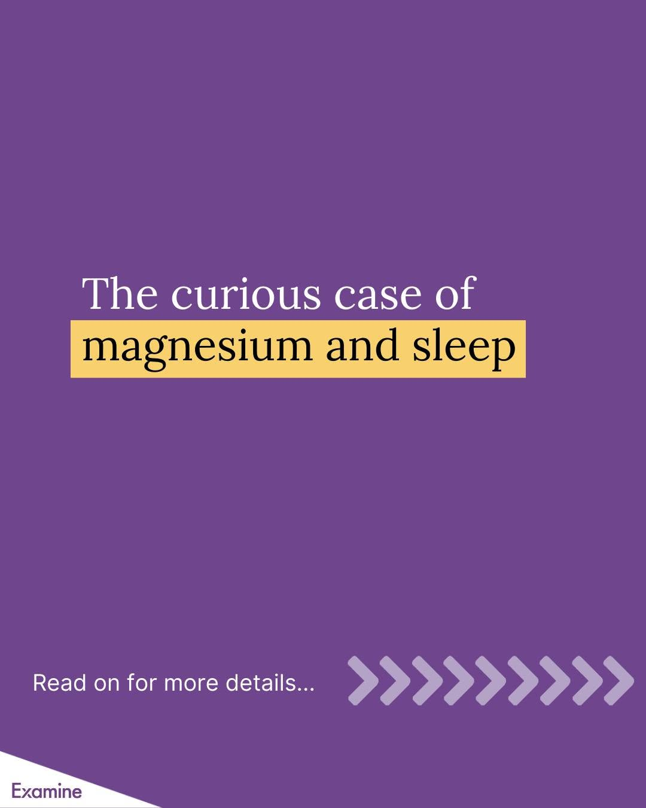
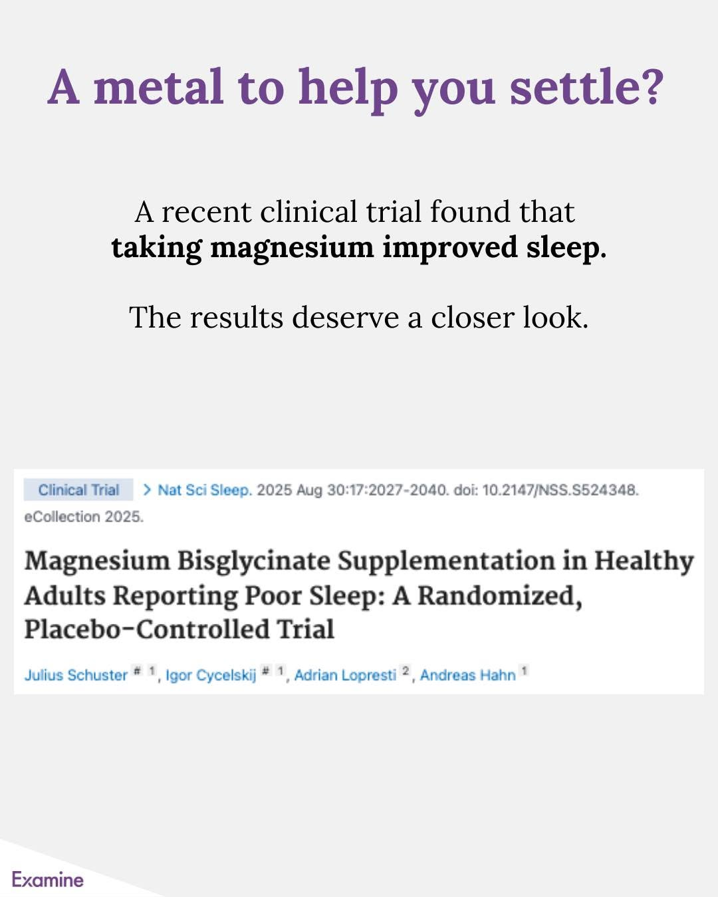
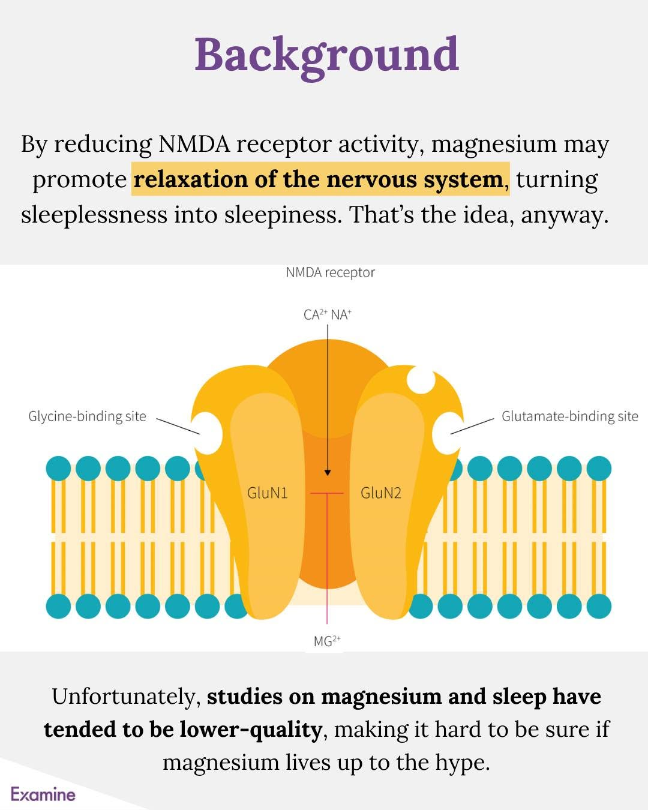
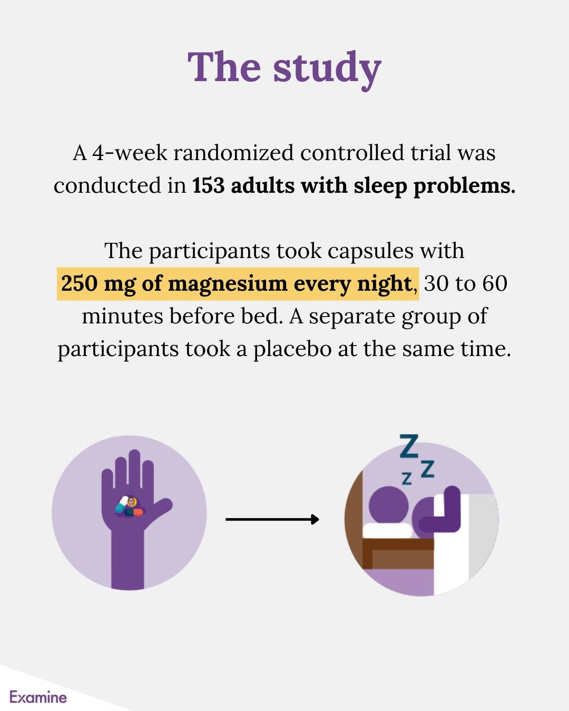
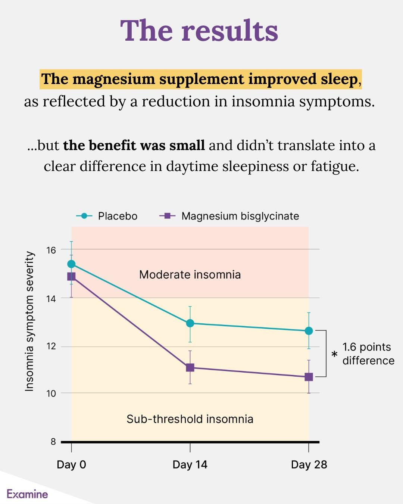

A recent randomized trial demonstrates that the benefits of magnesium supplementation on sleep are real, but modest.
#magnesiumHD #sleepHD
Magnesium is often promoted as a natural sleep aid, but does it actually work?
Magnesium is believed to inhibit NMDA receptor activity, which may calm the nervous system and help improve sleep. That’s the theory, at least.
The problem is that much of the research on magnesium and sleep has been low quality, making it difficult to determine whether the hype is justified.
Thankfully, researchers recently conducted a 4-week randomized controlled trial in 153 adults (80% women, 20% men) with sleep problems. Participants took 250 mg of magnesium 30 to 60 minutes before bed, while a control group took a placebo at the same time.
This study was fairly rigorous: it was preregistered, double-blind, and included a decent sample size. It also used magnesium bisglycinate (also called glycinate). This form is more bioavailable than commonly used forms of magnesium like oxide or carbonate, and it provides glycine, an amino acid that could itself improve sleep.
Ultimately, magnesium supplementation improved sleep. However, the size of the effect was small and didn’t translate into clear improvements in daytime sleepiness or fatigue. This suggests that while magnesium could be useful as part of a comprehensive approach to improve sleep, it might be disappointing as a standalone treatment.
Still, there’s also a lot we don’t yet know about magnesium and sleep. Are the effects more pronounced in people with low magnesium intake? What about in people with sleep problems due to anxiety, which magnesium seems to be helpful for? And how much of the benefit comes from magnesium itself versus the glycine provided by the bisglycinate form?
Magnesium might be helpful for sleep, but further research is needed to clarify who stands to benefit most ... and who doesn’t.
Read the full Editor’s Pick and other study summaries:
 Examine.comCan magnesium bisglycinate help improve poor sleep? - Study SummaryIn this 4-week randomized controlled trial in 153 participants with sleep problems, supplementation with magnesium bisglycinate improved insomnia symptoms, compared to a placebo, though the effect was small.examine.com
Examine.comCan magnesium bisglycinate help improve poor sleep? - Study SummaryIn this 4-week randomized controlled trial in 153 participants with sleep problems, supplementation with magnesium bisglycinate improved insomnia symptoms, compared to a placebo, though the effect was small.examine.com
#examined #magnesium #sleep




